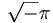

De: La Frikipedia, la enciclopedia extremadamente seria.
De: La Frikipedia, la enciclopedia extremadamente seria. De: La Frikipedia, la enciclopedia extremadamente seria.
"A la hora de la verdad, que es la de buscar a Jota en lo objetivo, uno olvida todo y se dispone a no ser fiel más que a su propia sinceridad."
~ Gerardo Diego sobre Jota Jota"A pesar de sus ilusiones racionalistas, e incluso marxistas, toda la historia del mundo es la historia de Jota."
~ Albert Camus sobre la Historia"Aunque Jota nazca mil o diez mil veces, de nada te valdrá si no nace por lo menos una vez en tu corazón."
~ Angelo Silesio sobre Jota Jota
Nacido en el año  a.c en las proximidades del monte de Venus donde, según reza la leyenda, fue encontrado por una loba que lo crió hasta que Él lo creyó oportuno (recientes estudios han determinado que pudo no tratarse de una loba teniendo en cuenta que en aquel antiguo idioma la palabra lupus podría no significar loba sino prostituta o, en palabras más técnicas pardus perrae).
No confundir con "La Jota"
Su infancia estuvo relacionada con la ciudad de Qandahar, provincia de Palencia, donde tras sus famosas conversaciones con Platón, Lenin y Juan Señor se llegó a la conclusión de que era imposible ganar una partida a las tres en raya en dos movimientos escribiendose así una de las más importantes páginas de la historia universal. Tras este importante revés creyó que era el momento de conquistar el mundo, comenzando por Asia. Con tan sólo quince años y con la única ayuda de Federico Jimenez Losantos que, a su vez, convenció a la vieja de los gatos y al Litri de Utrera puso en marcha tamaña empresa.
Antes de todo esto, Jota siempre demostró una gran precocidad en distintas facetas en sus primeros años. Con 5 meses fue capaz de contar desde  hasta 0 y al reves en el transcurso de una cagada, lo que ocasionó gran alborozo en su familia. Otra gran habilidad fue la de resolver sudokus, como podemos ver en la foto de la derecha, despues de resolver uno de ellos entraba en un estado de Nirvana e imitaba a Jordi Pujol durante exactamente 4 minutos, para gran alborozo de los familiares.
hasta 0 y al reves en el transcurso de una cagada, lo que ocasionó gran alborozo en su familia. Otra gran habilidad fue la de resolver sudokus, como podemos ver en la foto de la derecha, despues de resolver uno de ellos entraba en un estado de Nirvana e imitaba a Jordi Pujol durante exactamente 4 minutos, para gran alborozo de los familiares.
Durante toda su infancia estuvo influido por un cúmulo de idiotologías de rango socioracionalistas, goticofascistas e incluso nihilistas que hicieron que floreciera en él una ideología nueva y revolucionaria llamada, en la perspectiva temporal, NeoSocialismo cuyos máximos exponentes fueron Tamayo y Saez. Este partido, apoyado fervientemente por Jota Jota logró pobres resultados electorales debido, sin duda, al complejo ideario incomprendido por la mayoría del vulgo. Jota acabó renegando de la Democracia ya que estaba en contra de los negros.
Los pilares ideológicos de este mito del mundo contemporaneo lo hicieron llegar a su primera juventud con la energía de un revolucionario. Según varios escritos descubiertos por el dr. Cualquierez (colaborador a su vez de películas manga) se afirma que las ansias expansionistas de Jota fueron en sus primeros años muy fuertes en relación con Asia. Cada día, despues de contar las pehetas que le quedaban en la Caja Rural, subía al monte lasputas cercano a su residencia en la ciudad gastrohúngara de Gvarromänn. Un buen día vio la luz. Esa luz fue interpretada por él como una señal de Dios para el comienzo de la conquista del mundo.
Reunido con Jimenez Losantos, la vieja de los gatos y el Litri de Utrera, Jota Jota dedicó varios años a memorizar y recitar chistes de Eugenio. Tras este lapso en su vida comenzó la verdadera conquista del mundo que, por cierto, fue muy graciosa ya que Jota de cuando en cuando contaba un chiste de Eugenio. Tras el paso del mar colorao se aliaron con el ejercito de las galletas, cuya hefa Marbú Dorada procuró un desayuno completo al ejercito de Jota Jota.
Habiendo conquistado toda Asia y parte de la comarca de Barbate, Jota se dio cuenta de lo imposible de su ambición. Sin embargo dejó una huella muy dificil de borrar en la mayor parte del mundo. Los cinco continentes tomaron parte de la cultura Jotaica. No obstante, rompió relaciones con Jimenez Losantos por la distinta visión mantenida por ambos en lo que se refiere al materialismo filosófico ya que Jota estaba en contra de los gays. Casualmente también rompió relaciones con el litri de Utrera, cosa que aprovechó este último para comenzar su carrera como torero de ladrillos en su pueblo natal, Utrera.
Con el paso del tiempo, el mito de Jota fue creciendo de manera exponencial creándose religiones por todo el suelo pisado por Él durante La expansión del joteismo (ver Expansión del joteismo). Su gran influencia durante las campañas asiaticas en el Tibet hizo que la zona se impregnase de aquella gran cultura. Ahora es denominado Buda o Señor de la cosa. No es menor su influencia en el continente europeo y oriente próximo donde se le dio el nombre de iota demostrado por la inscripción I.N.R.I. la cual significa Iota Nazarenvs Rex Ivdaeorvm: Jota de Nazareth, rey de los Judios. Actualmente la norma fonemática indica que se le conoce como Jesus. Estos son sólo dos ejemplos de la influencia de Jota en el mundo desde la antiguedad, otros hechos también reseñables son la fundación de la religión Zulú, la cual adoptó una forma de bailar en sus ritos idéntica a la que prácticaba Jota tras los famosos comentarios en Roma que hizo Jota sobre Eugenio, los cuales provocaban en Él una extraña forma de risa y movimiento, para gran alborozo de los ahí presentes. Friedrich Nietschze, en su famoso Así habló Jotatustra, describe y resume de forma sublime todos y cada uno de los pasajes de la vida de Jota formandose así el modelo de Superhombre que utilizaron los Nacional-Socialistas alemanes para formular su ideología. Injustamente, en varios círculos intelectuales, se afirma que Jota fue el iniciador ideológico del nazismo.
Hay que reseñar que Jota no tomó parte en la fundación del Islam ya que estaba en contra de los moros, al contrario de los escritos del filósofo mesopotamico Curro Romero que así lo afirma en su polémico libro Las mentiras del Joteismo. Existen naciones de ultramar en las que se conoce a Jota con el nombre de oota oota.
Muchos son los rumores sobre Jota en nuestros dias. Se conoce de la situación de su morada pero, como si de una psicosis colectiva se tratase, nadie se ha atrevido a dar el paso de ir a visitarla. Se dice que, tras desengañarse en su conquista del mundo por medio de los palos, entabló una amistad más profunda con la vieja de los gatos con la cual fundó Mercadona, un segundo intento de hacerse con el dominio mundial en la sombra. La marca Hacendado, una de las filiales de Mercadona, fue creada como soporte de las nanomáquinas, con las que Jota estaría estableciendo un último intento de dominación mundial. Diversas leyendas le situan en los clubs de alterne en la carretera de La Coruña.
Las siguientes, son una relación de citas y dichos atribuidos a Jota:
Aparte de lo anterior mencionado, a Jota se le atribuyen los siguientes logros, algunos de dudosa moralidad:
Autor(es):